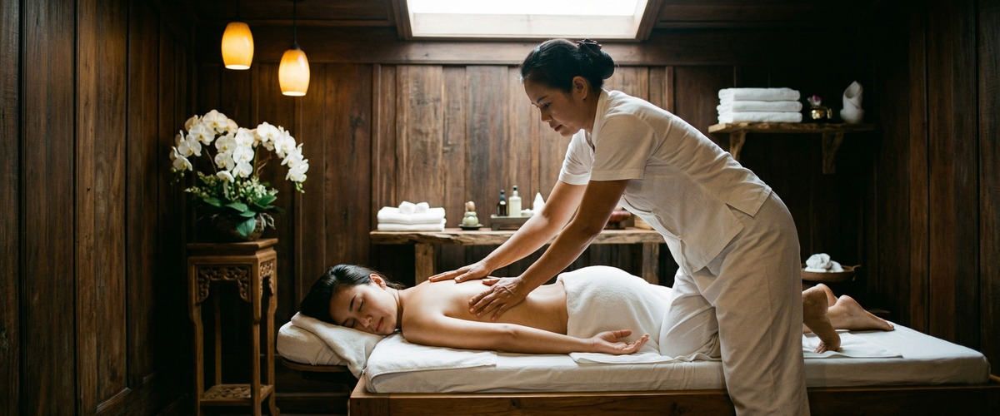
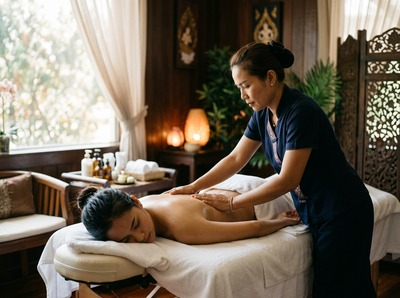

★★★★★ Quality gate failures: paragraphs. Review and edit before removing this notice. ★★★★★
Nine in ten UK adults experienced high or extreme levels of pressure and stress in the past year, according to Mental Health UK's Burnout Report 2026.

If you're a Glasgow worker and that figure doesn't surprise you, that's probably the most telling sign of all. Burnout has stopped being an edge case. It's the baseline for too many people, and the recovery support to match it simply isn't there.
The Burnout Report 2026 found that one in five workers took sick time due to stress-related mental health problems. More troubling, over one in four of those who took time off got no support when they returned.

Only 17% had any kind of formal recovery plan in place. That's a serious gap.
Burnout isn't just feeling tired at the end of a long week. It's deep physical, mental, and emotional exhaustion caused by ongoing stress — the kind that doesn't shift after a weekend on the sofa.
Left unaddressed, it leads to repeated absence, lower performance, and real health consequences. Glasgow's working population isn't immune — whether you're in finance, healthcare, the creative sector, or retail.
Many Glasgow workplaces have a deeply rooted culture of just getting on with it. Taking time for yourself can feel self-indulgent when deadlines are stacking up.
But that mindset is exactly what turns a short-term stress response into something much harder to recover from.
Chronic stress keeps the body stuck in a low-level fight-or-flight state. Cortisol — the main stress hormone — stays high for weeks or months at a time.
This disrupts sleep, tightens muscles, dulls mood, and slowly wears down the nervous system. You can't think your way out of a physical stress response. The body needs active help.
A recovery wellness plan isn't about spa days and scented candles. It's about building steady, grounded habits that help your nervous system reset.
Physical therapies like traditional Thai massage have a real role to play in that. Ready to start? Book your session today and give your body the reset it needs.
Thai massage combines assisted stretching, acupressure, and rhythmic pressure along the body's sen energy lines. It does something a hot bath or an early night simply can't.
It directly engages the parasympathetic nervous system — the part of your body responsible for rest, repair, and recovery.
Research published in the International Journal of Neuroscience found that massage therapy consistently lowers cortisol while raising serotonin and dopamine. These aren't minor shifts.
They're the biological markers of moving out of a stress state and into real recovery. For someone in the grip of burnout, that shift matters a great deal.
The physical side is just as important. Burnout doesn't only live in the mind — it builds up in the body too, in tight shoulders, a locked neck, shallow breathing, and persistent headaches.
A session of Thai massage at Glasgow Thai Massage works through that held tension carefully, restoring movement and releasing the muscle patterns that build up over months of stress.
A recovery wellness plan needs to work on the body and the mind together. Here's what that looks like for a Glasgow worker dealing with burnout — or heading towards it.
Regular bodywork. A monthly or fortnightly Thai massage gives the nervous system a reliable reset point. Consistency matters more than frequency. One session every two weeks is more effective than occasional visits when you've already hit the wall. Book online now and treat it like any other fixed appointment.
Sleep as a hard boundary. Burnout and poor sleep feed each other. Massage improves sleep quality directly. Keeping consistent bedtimes and reducing screen use before bed is the other side of that equation.
Movement without added pressure. Walking, yoga, and gentle stretching all support recovery without adding another performance target to your week. Flexibility work also helps maintain the gains made during a Thai massage session.
Honest conversations at work. Recovery doesn't happen in isolation. The Burnout Report 2026 found a growing gap between what workers need and what employers provide. If the conditions driving your stress aren't named and changed, personal wellness habits can only do so much.
Glasgow Thai Massage is a traditional Thai massage studio on West Nile Street in Glasgow city centre. Maliwan, the founder, trained at Wat Pho Thai Massage School in Bangkok and has over 20 years of practice.
This isn't a conveyor-belt wellness service. Sessions are attentive, unhurried, and adapted to what your body is carrying on that particular day.
For Glasgow workers dealing with the long tail of burnout — persistent tension, broken sleep, low mood, or the inability to properly switch off — regular Thai massage sessions offer something the rest of a wellness plan often can't.
The experience of your body actually letting go. That's not a luxury. In 2026, it's a necessity. Get in touch to book your appointment and take the first step.
Thai massage activates the parasympathetic nervous system, which handles rest and recovery. It lowers cortisol — the stress hormone that stays high during burnout — while raising serotonin and dopamine. The physical work on tight muscles also addresses body-level symptoms like neck pain, shoulder tension, and poor sleep that mental health approaches alone often miss.
Fortnightly sessions are a good starting point for active recovery. Once you're more stable, monthly sessions help stop stress from building back up. Consistency matters more than how often you come. Regular bodywork gives your nervous system a reliable reset to return to.
Yes, quite different. Traditional Thai massage is done fully clothed on a mat. It uses acupressure, assisted stretching, and rhythmic compression along the body's sen energy lines. It's more active than a Swedish or oil massage, working through joints and connective tissue as well as muscles. Many clients find it more effective for tension built up over months of stress, because it targets deep holding patterns — not just surface tightness.
A solid recovery plan works on several fronts at once. Alongside regular massage, focus on protecting sleep, adding gentle movement like walking or yoga, and cutting back on caffeine and alcohol. It also helps to address the workplace conditions causing the stress where you can. No single habit reverses burnout on its own. The combination of physical, behavioural, and environmental change is what creates lasting recovery.
Glasgow Thai Massage is on the third floor of Victoria Chambers, 142 West Nile Street, Glasgow G1 2RQ — in the heart of the city centre. It's a short walk from Buchanan Street subway station and most city centre offices. You can book directly through the online booking form at glasgowthaimassage.co.uk.